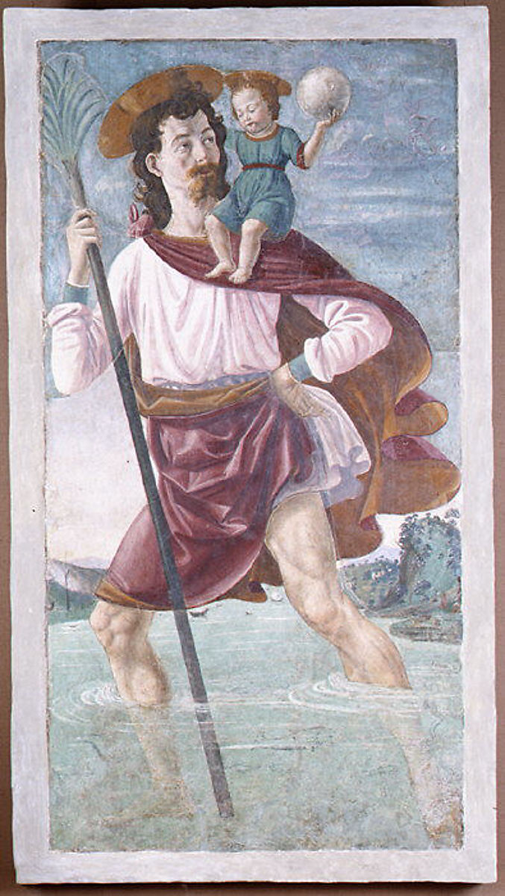

<head>
<meta charset="UTF-8" />
<meta name="keywords" content="drawing, painting" />
<meta name="description" content="drawings by Sunjy" />
<title>Sunjy</title>
<link rel="shortcut icon" type="image/x-icon" href="../../mImages/mCommon/favicon.ico" media="screen" />
<link rel="stylesheet" type="text/css" href="../../mCsses/mCommon/mCssA.css" />
<link rel="stylesheet" type="text/css" href="../../mCsses/mCommon/mCssB.css" />
<link rel="stylesheet" type="text/css" href="../../mCsses/mCommon/mCssC.css" />
<link rel="stylesheet" type="text/css" href="../../mCsses/mCommon/mCssD.css" />
<link rel="stylesheet" type="text/css" href="../../mCsses/mContent/mCssA.css" />
<link rel="stylesheet" type="text/css" href="../../mCsses/mContent/mCssB.css" />
<link rel="stylesheet" type="text/css" href="../../mCsses/mContent/mCssC.css" />
<link rel="stylesheet" type="text/css" href="../../mCsses/mContent/mCssD.css" />
</head>
<script type="text/javascript" src="../../mScripts/mContent/mContentAA.js" /></script>
<script type="text/javascript" src="../../mScripts/mContent/mContentAB.js" /></script>
<script type="text/javascript" src="../../mScripts/mContent/mContentAC.js" /></script>
<script type="text/javascript" src="../../mScripts/mContent/mContentAD.js" /></script>
<script type="text/javascript"></script> 
<script type="text/javascript">
document.write('<div class="mImgAbsolute"></div>');
/*
document.write('<p class="mFontSizeBColor" />From a white paper...</p>');
document.write('<table class="center"><tr><td>');
document.write('');
document.write('</td></tr></table>');
*/
</script>


<script type="text/javascript">
document.write('<p class="mFontSizeBColor" />Saint Christopher and the Infant Christ</p>');
document.write('<p class="mFontSizeSColor" />By Davide Ghirlandaio (David Bigordi). This imposing, well-preserved mural is an early work by Ghirlandaio, one of the most popular painters in late-fifteenth-century Florence and a master of the fresco technique. Its provenance is unknown, and the tradition that it decorated a chapel in the church of San Miniato fra le Torri in Florence is probably wrong: that fresco was described by early writers as about twice the size and was attributed to the Pollaiuolo brothers. <br><br>In true fresco technique, pigments mixed with water are applied directly on a fresh (or fresco) plaster wall. As the plaster sets, a chemical reaction occurs whereby the pigment particles become locked into the wall, giving the work great durability. In the fifteenth century, the design for a fresco was often executed with a red pigment, known as sinopia, on a preparatory layer of coarse plaster (&#34;arriccio&#34;). Over this was laid just the amount of finely ground plaster (&#34;intonaco&#34;) that could be painted in a single day. Our fresco comprises seven such sections, or &#34;giornate&#34;, which closely follow the contours of the figures and drapery. <br><br>The painting is in exceptionally good condition. Many details, especially in the landscape, were added after the plaster had dried. Such &#34;a secco&#34; details have usually fallen away.</p>');
document.write('<table class="center" /><tr><td>');
document.write('<br>In true fresco technique, pigments mixed with water are applied directly on a fresh (or fresco) plaster wall. As the plaster sets, a chemical reaction occurs whereby the pigment particles become locked into the wall, giving the work great durability. In the fifteenth century, the design for a fresco was often executed with a red pigment, known as sinopia, on a preparatory layer of coarse plaster (&#34;arriccio&#34;). Over this was laid just the amount of finely ground plaster (&#34;intonaco&#34;) that could be painted in a single day. Our fresco comprises seven such sections, or &#34;giornate&#34;, which closely follow the contours of the figures and drapery. <br><br>The painting is in exceptionally good condition. Many details, especially in the landscape, were added after the plaster had dried. Such &#34;a secco&#34; details have usually fallen away." />');
document.write('</td></tr></table>');
</script>


